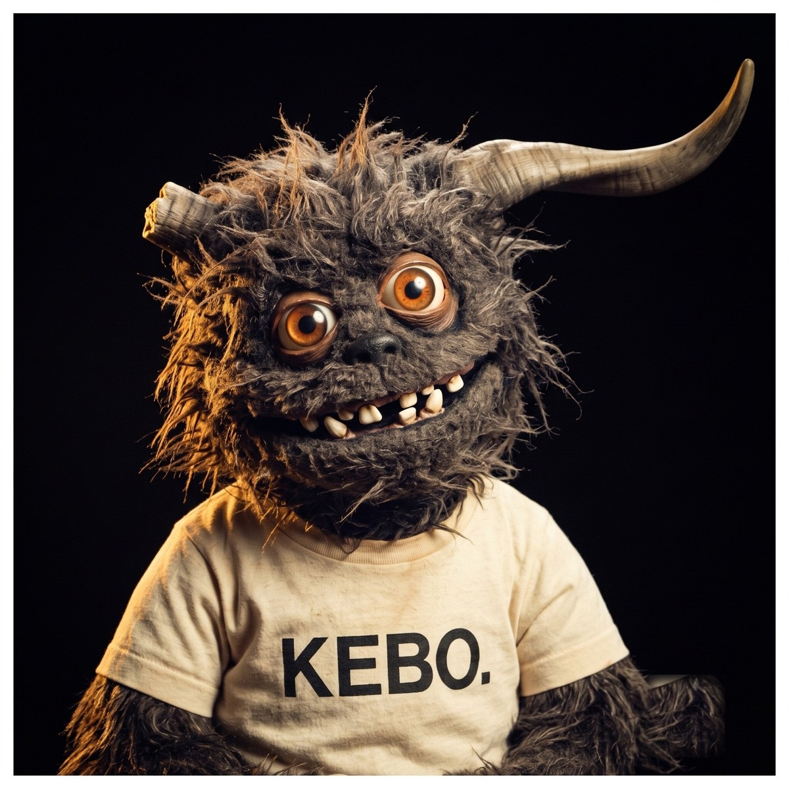

La cuadrilla
unificada
La auditoría marcó las mascotas como el punto más débil del sistema: cinco criaturas fotografiadas en mundos distintos, con acabados que chocan con la comida. Aquí está cómo lo arreglo — sin perder a ninguno, dándoles un solo estudio.
Hoy cada uno vive en otro mundo
Kebo en un sillón, Brasa en una parrilla, Coco en una cocina de cobre, Raúl en un callejón, Turbo en la calle. Fondos, luz y encuadre distintos. Para un cliente se ven como stock de cinco lados diferentes.


- ✕Cinco fondos distintos — no se leen como una familia ni como una marca.
- ✕Chocan con la comida: tus platillos son fondo negro de estudio; las mascotas son escenas ambientales.
- ✕Raúl rompe el mundo — es foto de un humano real entre monstruos de utilería.
- ✕Kebo tiene 3 caras — el logo rombo, el sticker con cuernos y el puppet peludo no son el mismo personaje.
Un solo estudio para todos
Mismo fondo, misma luz que la comida, mismo encuadre. Los monstruos siguen siendo ellos — solo que ahora pertenecen al mismo universo visual que tus kebabs.
Kebo, antes y después
No es maqueta: generé a Kebo con el tratamiento nuevo para que veas el salto real. Mismo personaje (cuerno, ojos, sonrisa, camiseta) — solo cambió el mundo: fondo negro seamless y la luz de tu comida.

¿Se ve? Ahora pertenece al mismo universo que los kebabs. Si te late, replico este mismo estudio para Brasa, Coco, Raúl, Turbo y El Alpha.
Quién es quién — y qué cambia
El ícono de marca es uno
El rombo mordido con tres zarpazos (La Garra) se queda como logo — funciona a 16px y bordado. Y el personaje Kebo se define con UNA ficha canónica (el busto peludo con cuerno roto sobre negro). Los puppets son "el reparto"; el ícono de la marca no cambia. Se acaban las tres versiones distintas.
El plan, paso a paso
Genero un estudio de referencia: defino el fondo negro + luz clave con una toma patrón (uso a Kebo como prueba de dirección).
Re-genero los 6 retratos en ese mismo estudio, busto 1:1, con la referencia pegada en Gemini para mantener a cada personaje idéntico — solo cambia el fondo y el encuadre.
Reemplazo las fotos en la sección "El Equipo" del menú y regenero las 4 imágenes de carrusel + el PDF.
La moto de Turbo y el empaque se quedan en la sección de delivery (ahí el ambiente sí suma); las fichas de personaje van todas en negro.
Si te late la dirección, arranco por el estudio de referencia + Kebo como prueba, te lo enseño, y si convence sigo con los otros 5. Tú apruebas antes de que regenere todo.